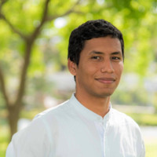

|  |
Brian Hernández Obregón
Gerencia de Proyectos | Cooperación Internacional
| Web Development
LinkedIn
|
Negociador internacional con conocimientos en las áreas de
Administración, Mercadeo y especial énfasis en Relaciones Internacionales
y Cooperación Internacional.
Experiencia en gestión de alianzas internacionales, y proyectos
relacionados con movilidad académica, desarrollo de capacidades y
movilización de recursos. Interés en trabajar en proyectos de educación,
sostenibilidad, desarrollo social inclusivo y construcción de paz.
Enfocado al logro, con espíritu de equipo, buenas habilidades
comunicativas y orientación al aprendizaje y desarrollo continuo.
Actualmente, formándose como programador con énfasis en desarrollo web
y aprendiendo también sobre el desarrollo de aplicaciones para móviles,
con el fin de contribuir a la transformación digital y la adopción de las
tecnologías de la industria 4.0 por parte de organizaciones y
emprendedores.
Educación
- Universidad EAN
Maestría en Gerencia de Proyectos
(Gestión de empresas/organizaciones sin
ánimo de lucro/entidades públicas).
2020 – 2022
- Universidad del Magdalena
Negocios internacionales - 416/500
2007 – 2014
Estudiante becado Proyecto COOPEN Erasmus Mundus 2010-2011
Licenciatura em Línguas e Relações Internacionais, con cursos de Máster
en el Mestrado em História, Relações Internacionais e Cooperação.
Universidade do Porto, Porto (Portugal).
- Servicio Nacional de Aprendizaje (SENA)
Técnico (Virtual) - Programación informática, aplicaciones específicas
2021 – 2022
Programa Técnico en Programación de Aplicaciones para Dispositivos
Móviles - Formación Titulada Virtual a través del Centro Nacional de
Asistencia Técnica a la Industria (ASTIN) del SENA - Cali, Valle del
Cauca.
- Universidad del Norte
Diplomado - Conocimientos Académicos en Habilidades en Programación
(MisiónTIC 2022)
Programación informática. 2021 – 2021
Formación a través de convocatoria MisiónTIC 2022 del Ministerio de las
TIC de Colombia, beca para aprender sobre Fundamentos de Programación,
Programación Básica y Desarrollo de Software en el marco del programa
de Conocimientos Académicos en Habilidades en Programación con énfasis
en aplicaciones web.
Experiencia
| Fechas |
Cargo |
| 2016 - Presente |
Contratista - Cooperación Internacional y Proyectos
Universidad del Magdalena |
| 2014 - 2016 |
Técnico Administrativo - Internacionalización
Universidad del Magdalena |
Habilidades
| Gestión de Proyectos |
⭐⭐⭐⭐⭐ |
| Liderazgo |
⭐⭐⭐⭐ |
| Trabajo en Equipo |
⭐⭐⭐⭐⭐ |
|
| Inglés |
⭐⭐⭐⭐⭐ |
| Francés |
⭐⭐⭐ |
| Portugués |
⭐⭐⭐ |
|
Información Adicional
Mis hobbies
Contacto